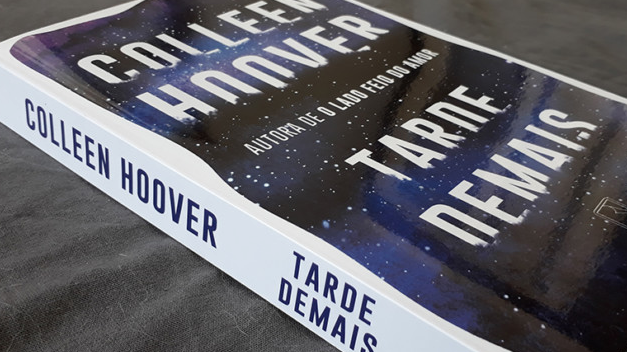

Tarde Demais - Colleen Hoover
10 de Maio de 2025 15:32 Sinceramente, não sei o que pensar desse livro. Mas será que realmente tem algo para pensar? Talvez a intenção tenha sido nos fazer refletir sobre temas pesados trazendo a realidade nua e crua... mas, no fim, temos um livro repleto de desconforto, traumas e gatilhos até para quem não passou pelas mesmas situações que a personagem principal.
Um breve resumo: Sloan está presa em um relacionamento abusivo com Asa, um traficante violento e controlador. Ela permanece ao lado dele para proteger o irmão, (o que não faz sentido) mas vive com medo constante aceitando passar por diversos absurdos dentro de seu cárcere privado relacionamento. Até que Carter, um agente da polícia, se infiltra na operação de Asa e muda tudo (ou nada). Conforme os dois se aproximam, Sloan vê uma possível saída — mas ninguém parece certo nesse história (e no fim realmente ninguém está).
Ok, eu sei que a história quer retratar temas difíceis como abuso, violência doméstica e dependência emocional, mas o grande problema desse livro, é forma que esses temas são abordados. Essa história não possui momentos alegres ou fofos, é apenas tragédia atrás de tragédia. É uma história horrenda sem motivos aparentes. Parece que a autora estava interessada em apenas chocar os seus leitores com cenas absurdas e nojentas, esquecendo de trazer uma reflexão real em cima da problemática. É somente esse ponto em específico que prende o leitor. A curiosidade de "O que vem depois?".
Mas eu tomei as dores de Sloan para mim, por que sei que não é fácil ser uma mulher sozinha no mundo, se sentir dependente de outros e, a ainda por cima, viver sentindo que sua vida está em risco caso não siga exatamente o que esperam de você. É apenas por esse motivo que estou dando 1 estrela para esse livro, por que o resto, foi desnecessário.